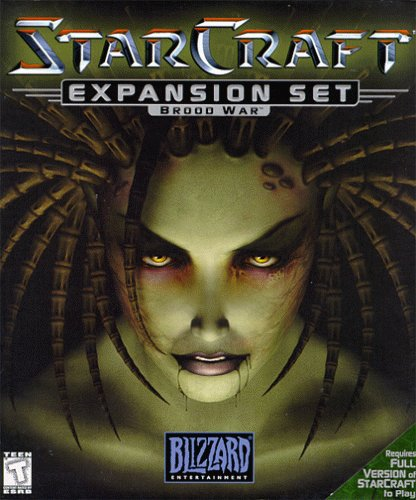

Zerg(저그)
Zerg(저그) Terran(테란)
Terran(테란) Protoss(프로토스)
Protoss(프로토스)

블리자드 엔터테인먼트에서 제작한 실시간 전략 시뮬레이션(RTS) 게임. SF, 스페이스 오페라 풍의 세계관을 배경으로 하고있다.
워크래프트 시리즈, 디아블로 시리즈와 더불어 블리자드의 주력 IP 가운데 하나이며, 대한민국에선 RTS 게임계의 레전드 시리즈라 할수있다.
25세기 우주를 배경으로 인류의 후손인 테란, 외계 생명체인 저그, 프로토스 세 종족이 등장한다.